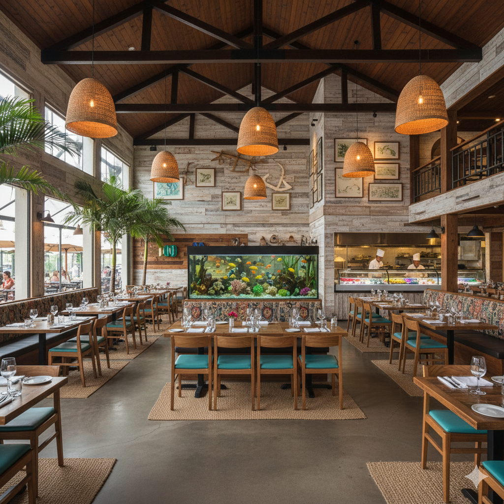

Jaguar Buxudo Restaurante
Somos o ponto de encontro entre a força da culinária brasileira e a elegância de um restaurante gourmet. Prepare-se para uma aventura de sabores que desafia o paladar e alimenta a alma.

Destaques da casa

CAMARÃO MAUÍ
Prato de camarões grelhados
Conheça Nossa Equipe
Chef Pedro Santos
Especialista em culinária brasileira moderna, com mais de 15 anos de experiência.
Chef Ana Luiza
Além de ter 12 anos de cozinha, e estudado culinária na França, exerce o papel de administração da empresa